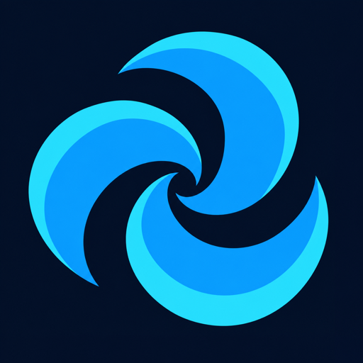
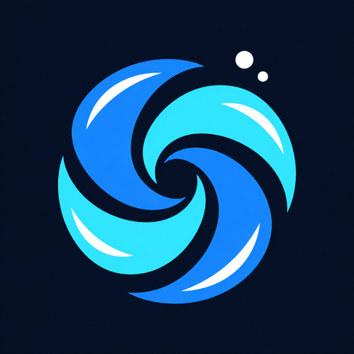
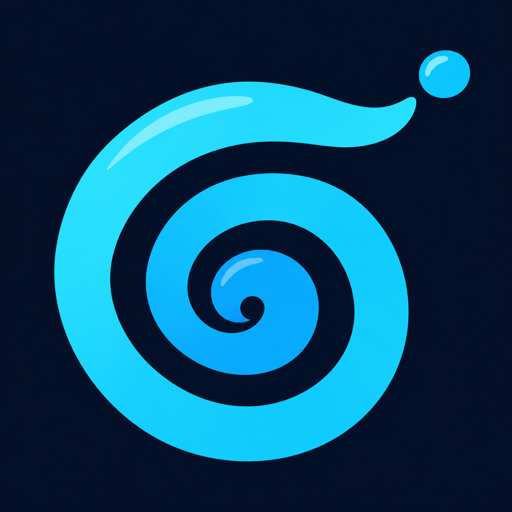

The Vortex Recommended
The Vortex is the flush seen from directly above, with no toilet in sight: three thick arms of electric blue and cyan spinning into a dark drain. It is the second after you press the Flush Button, when everything spirals away.
It is the most abstract and the most discreet of the three. On a home screen it could be a weather app or a game, so nobody asks. It also works as the glyph on the Flush Button itself, so the icon and the main action share one shape.
1 · The mark

2 · Android app icon
3 · On the home screen
4 · Small sizes
At 48px the three arms and the dark drain centre still read as a swirl. The flat two-tone arms hold up better than gloss would.
5 · Lockup
6 · Alternates


7 · After a Flush
Toast lines that suit this mark's personality.
Exploration only. Logos are AI-generated drafts (Codex image generation) and would need a vector redraw and a trademark search before use.